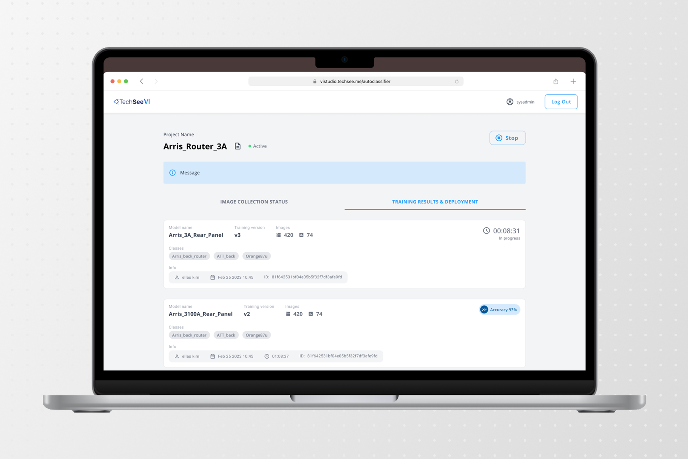
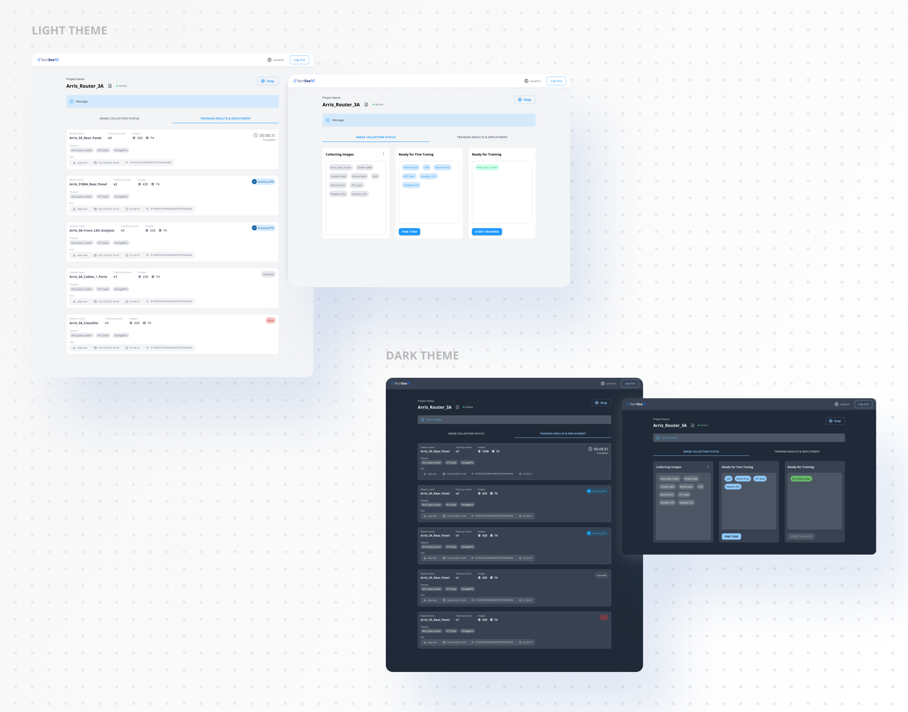

Auto-Classifier
Turning the support sessions a company already runs into the training data its AI needs.

Product Design Manager — hands-on, end-to-end UX
Worked closely with data/ML; almost every decision was bounded by what the model could actually do
Image clustering and model training with no code, inside Visual Intelligence Studio, for people with no knowledge of how to work with AI
Didn’t reach production. The clustering it depended on never became reliable enough
TechSee, 2024
Computer vision models need labelled images. Enterprises running visual support generate exactly the right ones — real devices, real homes, bad light — but customer camera feeds can’t be recorded. What you get instead is snapshots: frames grabbed every few seconds, a scatter of unlabelled stills from thousands of calls, in no order.
Auto-Classifier was the no-code path from that pile to a trained model. The pile came from TechSee Live: it captured a screenshot of a live session every few seconds, and Auto-Classifier clustered those images into the classes the AI models were then trained on. It lived inside Visual Intelligence Studio, the platform Vodafone publicly credits for building the models behind its self-service flows.
Built for enterprise ops teams, though in practice it was run internally — by students working through real customer cases. Same job, but not the customer, and someone labelling all day builds a fluency an ops person never will.
Before the screens, the machinery
I couldn’t design any of this until I understood how it worked underneath. How an image gets recognised as an object at all. How clustering decides two photos belong together. What the model can settle on its own, and where it has to stop and ask a person.
So I spent the first stretch of this project at a whiteboard with the data and ML team rather than in Figma. In a tool like this, the interface is downstream of the model: almost every screen I could draw was really a decision about what the model could be trusted with.

Human confirmation wasn’t optional
The model couldn’t cluster images or recognise device states accurately enough alone. People reviewing and correcting its groupings was how accuracy got there.
Each one became a microvalidation, closer to a CAPTCHA than a review screen: one small, unambiguous judgement, repeated. A pattern nobody needs taught, at a cost per item low enough that thousands stay viable.

Sufficiency, made visible
TechSee’s approach is few-shot: a new device trains in hours, from several images rather than tens of thousands.
Getting there is a loop. The system collects images and makes an assumption about the device. That class goes to fine-tuning on a small batch. A person corrects it, and the correction sends the system back to collect more images of the same class through live sessions. The class returns larger, gets fine-tuned again on a random sample from the class, and keeps cycling until there is enough to train.
We built that as a list view first. Internal usability testing showed it wasn’t clear where any class actually stood. So it became a board, closer to Trello than a dashboard, where every clustered class sat in the column that described where it was: collecting images, ready to fine-tune, ready to train.
A class moved columns when it had earned it. Nobody had to work out whether there was enough data — its position on the board was the answer.

The same testing turned up something I hadn’t asked about. Every student had switched their machine to a dark theme. They sat on these screens for hours at a time, and the default light UI was tiring their eyes. So I built a dark mode into the tool.

What happened
It didn’t reach production while I was there.
The flow rested on clustering returning groups clean enough to be worth reviewing. It didn’t — and human confirmation was the mechanism meant to raise clustering accuracy in the first place. When the groups came back messy, confirming stopped being quick corrections and became doing the job by hand. The fix for the model was only affordable if the model was already roughly right.
When I left, the team was still working to make the flow hold together end to end.
What I’d do differently
I designed the confident path first. The whole flow assumed clustering would work, and I treated the case where it didn’t as an edge to handle later. It wasn’t an edge — it was the actual behaviour.
I’d design the uncertain state first now, and let the clean one fall out of it. And I’d pressure-test a dependency like that with the ML team before building a guided flow on top of it, not after.